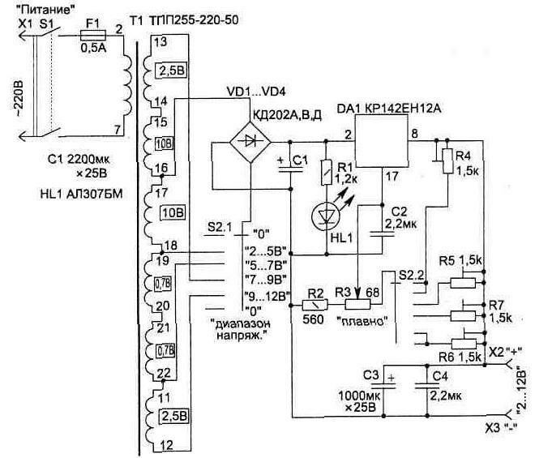

Универсальный блок питания
Применение микросхемы КР142ЕН12А (Б) (импортный аналог LM317) и унифицированного трансформатора ТПП255-220-50 позволяет изготовить простой и надежный источник питания для различных бытовых устройств.
Выходное напряжение источника может плавно регулироваться в пределах от 2 до 12 В. Максимальный ток нагрузки 1 А, при этом амплитуда пульсации выходного напряжения не превышает 2 мВ.

Рис. 1 - Схема универсального блока питания
Электрическая схема устройства приведена на рис. 1. Блок собран по типовой схеме последовательного компенсационного стабилизатора напряжения. Для того чтобы на микросхеме DA1 не рассеивать слишком большую тепловую мощность, в стабилизаторе предусмотрено дискретное переключение выводов вторичных обмоток трансформатора секцией S2.1 переключателя. Одновременно переключаются и резисторы R4...R7 делителей обратной связи для установки границы регулировки выходного напряжения. На каждом из поддиапазонов нужное напряжение можно устанавливать переменным резистором R3. Переключатель обеспечивает установку диапазонов выходных напряжений 2...5, 5...7, 7...9, 9...12 В. Микросхема DA1 имеет внутреннюю защиту от перегрузки. Индикатором работы источника является светодиод HL1. Для удобства использования схему можно дополнить стрелочным измерительным вольтметром.
В конструкции источника питания трансформатор можно заменить более мощным из этой же серии: ТПП276-220-50, ТПП292-220-50, ТПП319-220-50 (нумерация выводов подключения обмоток при этом не меняется, но увеличатся габариты и вес устройства). Микросхема рассчитана на работу с теплоотводом, и ее необходимо закрепить на радиаторе, при этом радиатор не должен иметь электрического контакта с корпусом конструкции. Для удобства настройки границы диапазонов выходных напряжений подстроечные резисторы R4...R7 лучше применить многооборотные, например типа СП5-2 или СП5-14. Конденсаторы применены: С1, СЗ типа К50-29; С2.С4-К73-17.
Источники
radio-uchebnik.ru - Универсальный блок питания на микросхеме КР142ЕН12